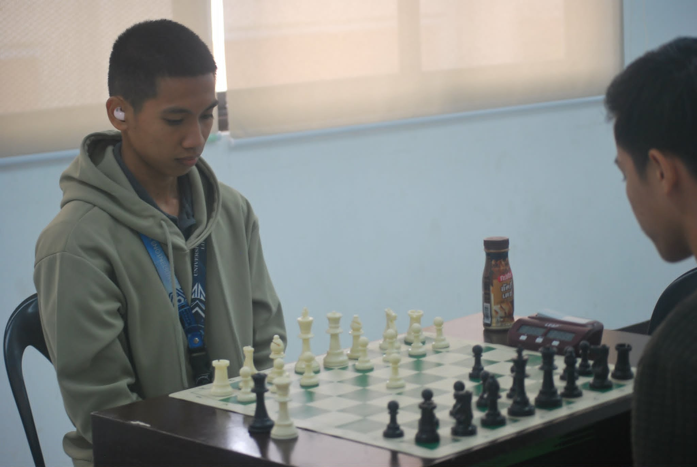
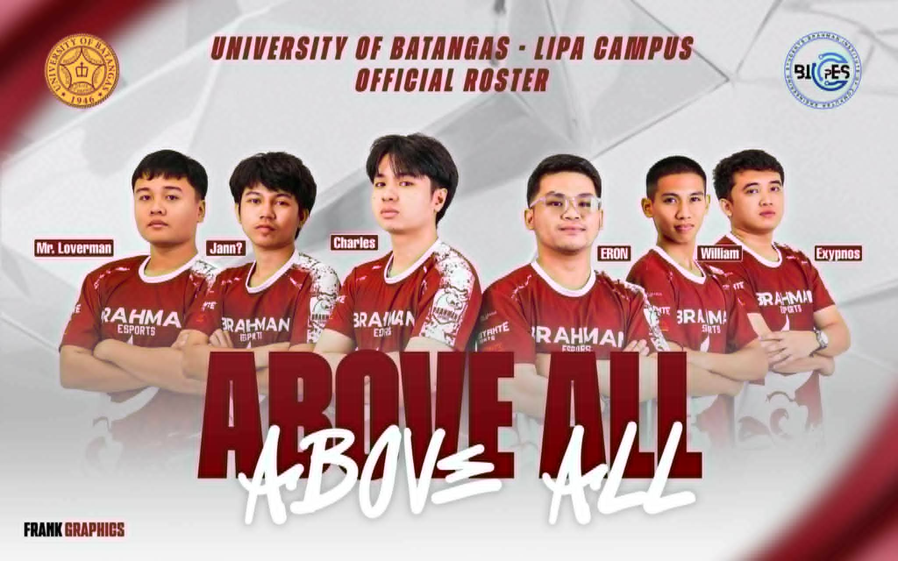
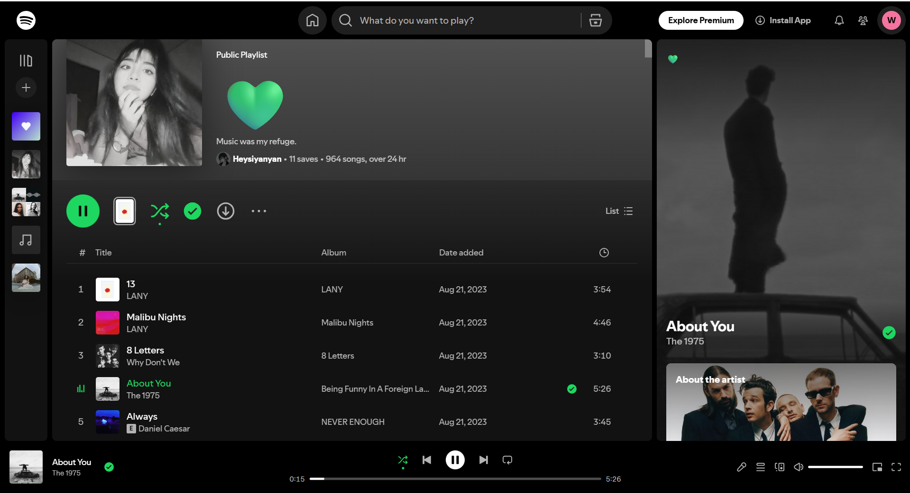

My Life & Hobbies
The things that keep me busy and inspired.

Chess
Enhancing critical thinking and foresight by analyzing complex patterns and executing calculated moves on the board.

Rubik's Cube
Developing patience and cognitive speed through algorithmic problem-solving and constant refinement of finger tricks.
Cycling
Maintaining physical endurance and mental clarity by exploring local trails and embracing the discipline of long-distance rides.
Watching Anime
Appreciating diverse narrative structures, creative world-building, and the intricate art of Japanese visual storytelling.

Mobile Legends
Refining real-time decision-making, strategic coordination, and effective communication within high-pressure team environments.

Listening to Music
Utilizing curated soundscapes to boost productivity and maintain deep focus during intense development and design sessions.
What I Listen To
Music is a big part of my workflow. Here is a playlist I usually listen to when I'm working on my projects: